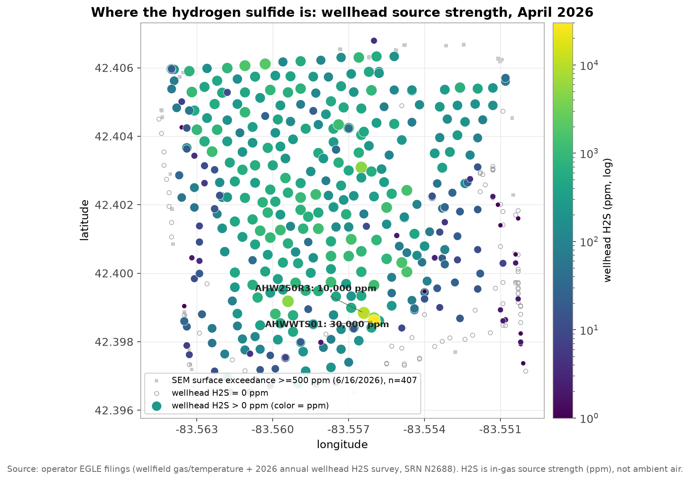
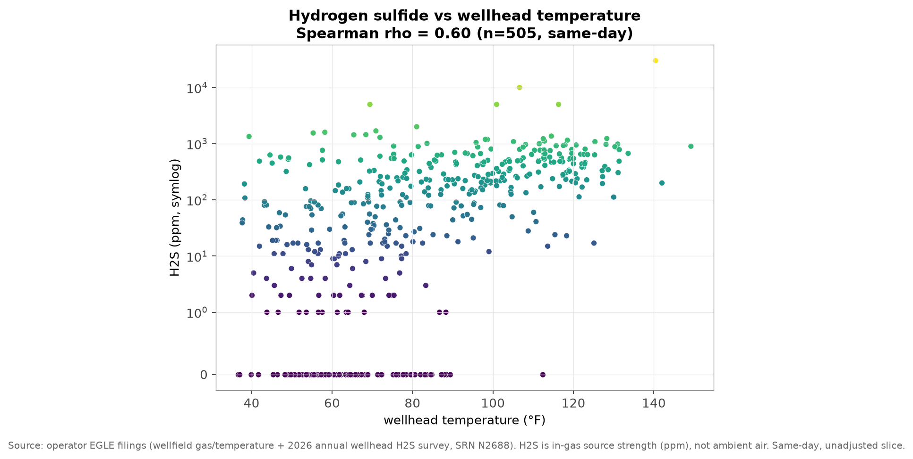

Two numbers frame it. At the fence line nearest homes, hydrogen sulfide has reached 327 ppb, about eleven times the fence-line action level. In the gas at the wells, the operator's own survey found up to 30,000 ppm as recently as April 2026. The monitor at the school next door, meanwhile, has stayed below 1 ppb for 68 straight months.
GFL took ownership of Arbor Hills Landfill on October 30, 2020, per their regulatory submission to EGLE (Nov 4, 2020, SRN N2688, signed by David Seegert).
Hydrogen sulfide (H2S) is the gas that gives landfill emissions their rotten-egg smell, and a recognized respiratory irritant at higher concentrations. Two kinds of measurement in the public record describe it at Arbor Hills: what actually reached the air at the property boundary, and how strong the source is in the gas inside the wells. This page puts each one next to what its level means for health. Every figure is the operator's own EGLE filing or the fence-line and school monitors, unaltered.
The site's perimeter network is a ring of six stations (MS-1 through MS-6) along the property boundary. Between May 2022 and mid-2025 it recorded 56 hourly readings above 30 ppb, in 25 distinct episodes. The most significant are below, with what each level means for health. No episode appears in the record after mid-2025, for two reasons noted under the table.
| Date (ET) | Station | Peak (ppb) | How long | What the level means for health |
|---|---|---|---|---|
| 2022-12-08 | 5 of 6 stations | 78 | same hour, site-wide | 2.6x the 30 ppb acute health reference level (the fence-line action level) |
| 2023-01-07 | MS-1 | 87 | single hour | 2.9x the reference level |
| 2023-09-22 | MS-2 | 79 | single hour | 2.6x the reference level |
| 2023-10-05 to 06 | MS-2 | 155 | ~10 hours | 5.2x the reference level |
| 2024-02-22 | MS-2 | 146 | ~19 hours | 4.9x the reference level |
| 2025-01-22 | MS-3 | 110 | ~3 hours | 3.7x the reference level |
| 2025-05-13 | MS-3 | 135 | ~2 hours | 4.5x the reference level |
| 2025-06-18* | MS-3 | 327 | single hour | 10.9x the reference level; the highest on record |
Each bar is scaled to the record reading (327 ppb), with the tick at the 30 ppb action level.
* No episode above 30 ppb appears in the record after mid-2025, for two reasons. The four stations still reporting (MS-1, MS-3, MS-4, MS-6) have recorded nothing above 30 ppb since then, with 2026 peaks below 23 ppb. At the same time, the other two stations, including MS-2 (historically the station with the most hydrogen-sulfide exceedances), stopped producing valid data, so the quiet is genuine at the working stations but not verified where exceedances were most likely (details below).
Reference points and sources. The 30 ppb level is the fence-line (perimeter) action level in the site's consent judgment, and equals the OEHHA 1-hour acute health reference level; it is a 15-minute rolling standard, so these hourly readings are a reasonable short-term approximation to it, though the raw 15-minute feed would be needed for an exact count. Odor detection begins around 5 to 20 ppb. A separate 24-hour ambient screening level (72 ppb, the EGLE Air Toxics value, also the school monitor's 24-hour action level) uses a longer averaging time, so a single hour above it is not by itself a 24-hour exceedance. The 750 ppb acute-discomfort level (EPA AEGL-1), the monitor's 15-minute precautionary tier, was never reached at the fence line. Studies of people living next to municipal landfills link ambient hydrogen sulfide to health effects: Heaney et al. (2011) associated low-parts-per-billion hydrogen sulfide with odor complaints and self-reported symptoms, and Mataloni et al. (2016) linked modeled landfill hydrogen sulfide exposure to elevated respiratory mortality and hospitalization in a 242,000-person cohort. These fence-line episodes reached levels well above the exposures in the Heaney study.
In April 2026 the operator surveyed hydrogen sulfide well by well and filed the results with EGLE. Of the 506 wells surveyed, 261 carried gas at or above 76 ppm and 91 were at or above 500 ppm. The strongest are below; the six shown are Drager-tube reads at the tube's range limit, so their true values are at or above the figures listed. These are concentrations inside the extracted gas, so the health column describes the hazard of that raw gas, not resident exposure.
| Well | H2S in gas (ppm) | What the raw gas is |
|---|---|---|
| AHWWTS01 (leachate sump) | ≥30,000 | The instrument's ceiling; raw gas far past every acute-hazard level |
| AHW250R3 | ≥10,000 | ~100x the 100 ppm IDLH (immediately dangerous to life) |
| AHW265R3, AHW235R4, second sump | ≥5,000 each | ~50x the IDLH (AHW265R3 is an EGLE-flagged odor-risk well) |
| AHWW402R | ≥2,000 | ~20x the IDLH |
| 261 of 506 wells | ≥76 | Above the level considered immediately dangerous if breathed |
| 91 of 506 wells | ≥500 | Five times the IDLH or more |
Across all 506 surveyed wells, hydrogen sulfide in the gas spreads like this:
0 ppm (117) under 76 ppm (128) 76 to 500 ppm (170) 500 ppm or more (91). The median well reads 80 ppm, just above the 76 ppm level considered dangerous if breathed, and 261 of the 506 wells (52%) are at or above it.
These are the strength of the source, not the air anyone breathes. The gas is captured and piped to the flares and the gas-to-energy plant, and the wellheads are tested as confined-space hazards for exactly this reason. What reaches residents is the fence-line ambient figure in the first table, in ppb. Elevated hydrogen sulfide here also predates GFL: EGLE inspectors in 2019, under the prior owner, recorded up to 23 ppm at gas holes with a handheld meter.

Arbor Hills has a documented elevated-temperature problem, tracked on this site's thermal map and wellfield explorer and visible in the 2022 subsurface event. In the operator's April survey, the two problems show up in the same wells: the hotter a well, the more hydrogen sulfide its gas tends to carry.

This is an association in the operator's own data, a rank correlation of 0.60, not a proven cause. As far as we can find, no study has directly tested whether higher landfill temperature drives more hydrogen sulfide, so this is best read as a real but unexplained pattern, one worth putting in front of EGLE and the operator rather than a settled mechanism. It is not simply an artifact of a few unusual wells, a point checked by well type.1 And these are in-gas source readings, not resident exposure.
The school next door has stayed clean. Ridge Wood Elementary, the most sensitive receptor near the landfill, has the longest clean record on the site. Under an EPA agreement, a monitor at the school has reported a value every month for 68 consecutive months, December 2020 through July 2026, and every one is below 1 ppb. This is a different instrument from the fence-line stations, a 24-hour sampler that reports down to a 1 ppb floor, so a reading below 1 ppb is a genuine low value rather than a frozen zero of the kind described next. On the 24-hour-average basis that monitor uses, the school has never approached the 72 ppb screening level.
But the recent fence-line quiet is not verified. The perimeter network has logged no exceedances since mid-2025, yet two of its six stations stopped producing valid hydrogen-sulfide readings around the same time. MS-2 and MS-5 have reported a flat 0.0 ppb since mid-2025, while their methane sensors and the other four stations keep varying normally. A working sensor produces small, fluctuating values, not an unbroken run of exact zeros, so this points to a non-responsive sensor rather than clean air. MS-2 is historically the station with the most hydrogen-sulfide exceedances of the six, so the recent absence of readings there cannot be read as compliance. The source is GFL's own public perimeter feed (Barr Engineering).
1 The obvious question is whether the correlation is just a well-type effect, since leachate wells run both hot and high in hydrogen sulfide. It is not. Overall Spearman rank correlation 0.60 (505 wells); within the vertical gas wells alone 0.58 (295 wells); excluding every leachate, sump, and riser well 0.59 (only 6 wells excluded); controlling for well type across all categories, a moderate 0.35 remains. Computed from the operator's filed April 2026 survey and wellfield temperatures (in the data releases below). On the science: the abiotic elevated-temperature reaction pathway described in the landfill literature tracks other gases, not hydrogen sulfide, and we could not find a study that directly tests temperature against in-gas hydrogen sulfide, so this is an untested question, not a resolved one. Return.
{kind=link}
{kind=link}